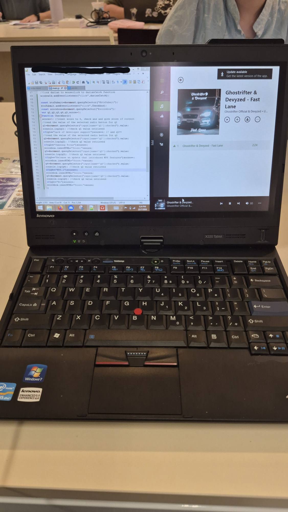
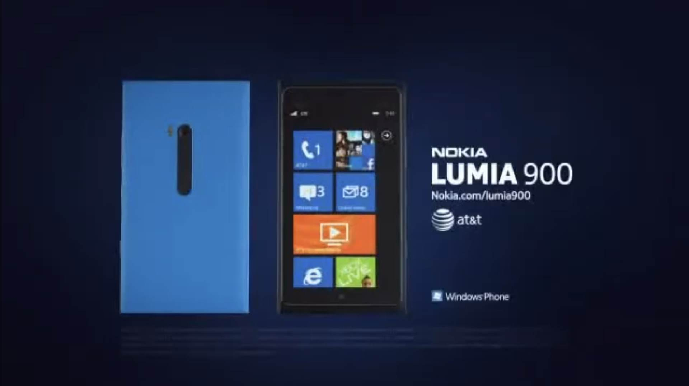
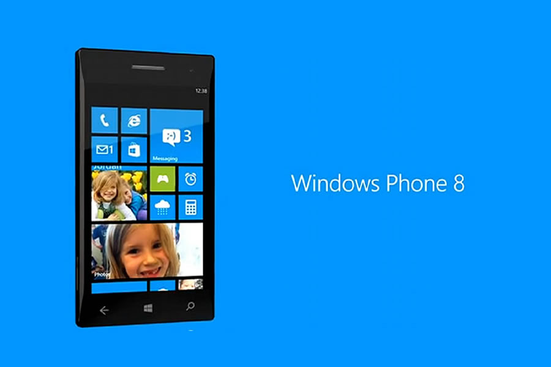
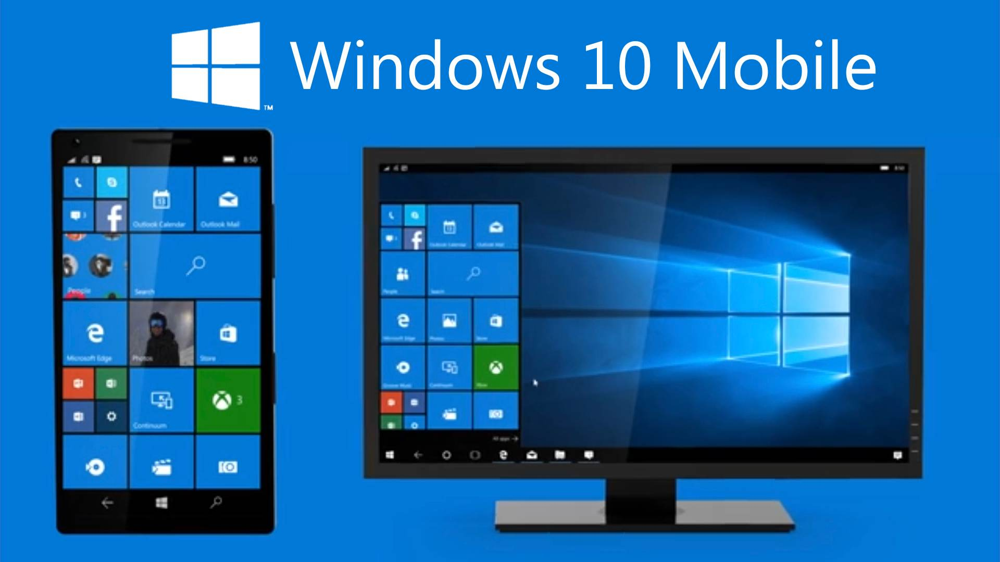
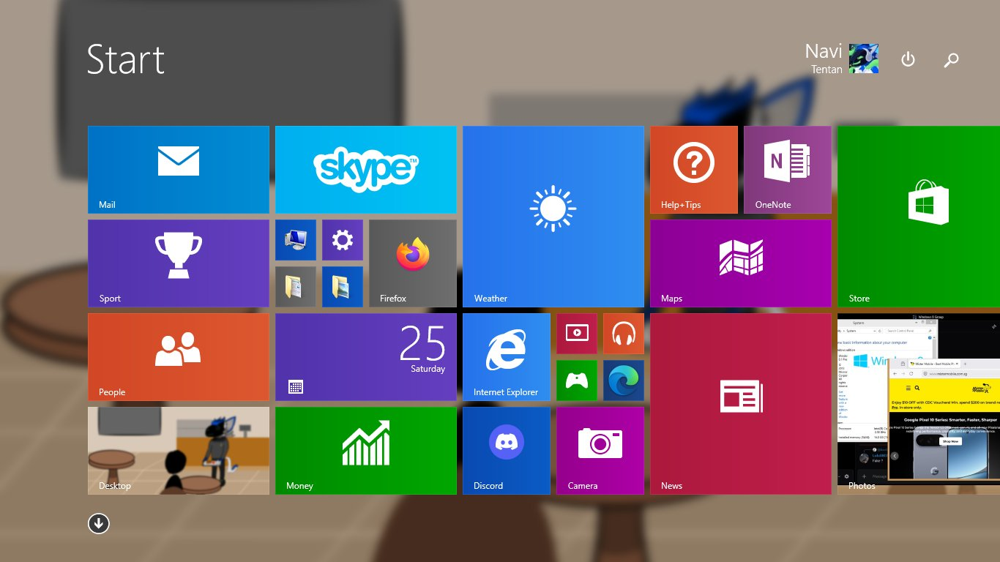
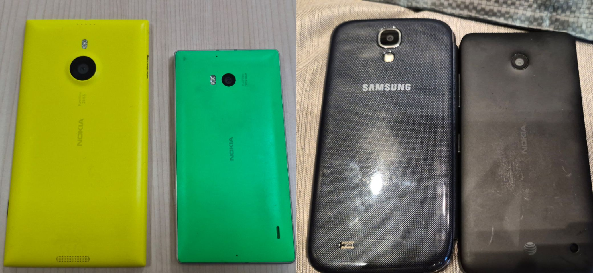

Many people would think of Windows 8 as a flop that undeniably got off Microsoft off the wrong place. Many also despised the new look as they were unaccustomed to the new design
that dramatically changed how they used computers today. While I believe that the reasons were valid, I feel that the design itself was a true underdog because of how radical and
how innovative the design is.
Imagine if you saw the design on a Surface Pro or a different 2 in 1 laptop that ran 8. The touchscreen made sense for the squares Microsoft called
Live Tiles because of how Metro UI was designed for fingers and not precise input like a mouse or a stylus. Microsoft noted that they were designed for touch in mind and I feel they
did their job. Again, complaints are centered around how the interface does not make sense for a desktop and I also agree with the sentiment because it is like using the microwave to
toast bread, it would just not work.
Not only that, Windows 8 also introduced the Windows Store which laid the groundwork that Microsoft eventually took advantage of in 11 by encouraging developers to develop apps native
to the app store, addressing the app gap that the store originally suffered from in Windows 8 and 10. The store also became vital for Microsoft to push applications to ARM devices running a
restricted version of Windows 8 named Windows 8 RT, maintaining functionality without emulation (Like what Microsoft did for Windows 10 and 11) while providing ease of use across all of
their products. (example: Windows Phone, a Surface RT and a desktop PC)
So yes, people hated the OS because of the unexpected change, but it's these changes are the reason why I fell
in love with them in the first place. Ultimately, many more hated Windows 11 now because of bloatware and privacy concerns (like I am), making the return to 8 for me quite relaxing.

Written on Windows 8.1
Surprise Minigame: Window Clicker
Click the window to catch it!
Everyone has heard of iOS and Android, or maybe even remember the amount of different Android forks that enthusiasts and consumer use. ColorOS, One UI and HyperOS to name the usual while
GrapheneOS and LineageOS make up enthusiast knowledge. But do you know that there used to be a third player in the mobile market space? That player that we no longer hear of was Windows
Phone. Come with me and see what it used to look like and how it ultimately panned out.
The Era of Euphoria (Windows Phone 7)
As much as this fact might shock you, Apple wasn't actually the leader in phones before the iPhone. Apple with Motorola's help tried with the Motorola Rokr E1 but it was severly hampered
by Apple itself. But coming back to Microsoft reveals that they had as much as nearly 20 percent of the smartphone market! Obviously, the iPhone changed that but Microsoft was slow to respond,
with their CEO calling it overpriced and impractical for business customers.

It wouldn't be until 2008 when development was reignited and then 2010 when Windows Phone 7's release would mean Microsoft had a definitive product that could answer to the
new smartphone market. Personally, I find it a mistake not to respond as they had plenty of time to launch it in 2008 or 2009, making it their first mistake. They didn't skimp out though and the
launch of the Lumia 800 and 900 with the song "I'm Not Invisible" by Megan Wyler and "Garden" by TEED being played in commercials to signal the big launch.
During this time, they even have the
"Smoked by Windows Phone Challenge" in which people simply do a task that a Windows Phone could do faster for $100. Unsurprisingly, the Windows Phone won the majority of the tests that were carried
out. More devices were eventually introduced such as the Samsung Focus and the HTC 7 Series, complementing Nokia's Lumia lineup. Windows Phone 7.5 (Mango) was eventually released in 2011, bringing an
updated Internet Explorer browser, Twitter integration and SkyDrive access. Windows Phone 7 had around 4 percent of the market before its successor launched, an abysmal number compared to iOS and Android.
Going bigger but also...retreating?? (Windows Phone 8 and 8.1)

At this point, Microsoft at the time thought that the release of Apple's iPad and the "post-PC era" coming meant an existential issue that Microsoft needed to correct away from. While my section breaking
down Metro UI will cover why such decisions in the first place in terms of looks, tablet usage soaring is what led to Windows 8 being designed around them in the first place. Seeing the success of Metro UI
initially through a touch interface, they adopted it for their desktop counterparts too.
To complement Windows 8's launch, they also released Windows Phone 8 which brought improvements such as
swapping out the dated Windows CE kernel for the Windows NT kernel, native support for 4G LTE connectivity, HD displays, multi-core processors such as the Snapdragon 800 and even support microSD cards.
Of course, many people hated it as they were using Windows on non-touch devices such as a Desktop PC or a laptop and never seen the interface before on Windows Phone.
Coming back to the kernel,
this change was also controversial because many of the legacy Windows Phone 7 devices could not recieve this new update due to incompatibilities between CE and NT. Once again to mitigate this, Microsoft
introduced Windows Phone 7.8 which brought many Windows Phone 8 features to WP7 without the underlying kernel changed. I would consider this the second mistake as not only Microsoft could have offered free
replacements like what they did with the Red Ring of Death on Xbox 360 but also could have made the transition much more smoother by mobilising many Nokia (which was Windows Phone's primary manufacturer) and
Microsoft pop ups to achieve this sort of effect.
Windows Phone 8.1 eventually arrived as an update, with Cortana, Swipe to Type, Action Center and a new version of Internet Explorer being introduced
as well to round out the lineup. Personally, these changes were a little boring to me but they were well deserved especially since Windows 8.1 was also introduced at around the same time.
The final plunge into darkness (Windows 10 Mobile)

Microsoft knew at this point they already lost the smartphone race, market share had slipped to 3 percen with WP8 with most users already on iOS or Android. Seeing this fate upon them, they decided to release a half-baked successor to Windows Phone 8 named Windows 10 Mobile in 2015. Arguably, I would say this is the moment Microsoft either snapped with the platform or was eager to let it slip into the past and using the system felt like so. Many users complained that the software was buggy, the OS was too slow to keep up with daily tasks and even Metro UI was horrendously destroyed to the point it is barely recognisable and legible. Alas, the writing was on the wall and Microsoft ended support for the platform in 2020, with phone sales stopped in 2016.
Legacy of Windows Phone
While the actual ecosystem itself died, many community solutions popped up to step in after Windows 10 Mobile support died off. These include MetroCord, Live Store, 8Marketplace and myTube patched just to name a few. It's hilarious to think they are as enthusiastic as the Linux community is now, but in in all honesty, it's quite beautiful.
Windows Phone History Quiz
Not submitted
Metro UI breakdown
When you boot up into Windows 8, this is going to be what you see. In fact, this website is built based off this interface from Windows Phone 7. So let me help you to explain why this Ui design is the way it is.

Remember the last two sections describing that Metro UI as a touch friendly interface? They delierately did this as fingers are less precise than a stylus or a mouse pointer can be. This is because fingers have more
surface area than the two things I have just mentioned, that's why touch interfaces were not that common in the 1990s as technology were not that advanced yet and thus relied on a stylus to write on. This all changed
with the introduction of the original iPhone in 2007 which popularised the usage of touchscreen digitisers, paving way for more touchscreen-based devices to be introduced such as the iPad in 2010. Microsoft saw this
potential and introduced Live Tiles to take advantage of these displays.
They were blocky, big and bold while providing information in real time. This interface cultivated into marketing slogans such as "Get in,
Get out and back to life" as Live Tiles eliminated the need to actually open an app just to look at information, compared to many computer and mobile operating systems today. Remember how the tiles looked? That's exactly
what happened when iOS 14 was released in 2020, borrowing from Live Tiles and Android widgets that precede it. In fact, even Apple hid the apps into an app drawer to ensure that only important apps or widgets were shown on
the home screen.
Again, this is what Microsoft had done previously alongside Android and that's what we're also covering too. They allow you to sort by letter by holding down it in the app drawer, allowing you to
open an app that you finally need to use. In desktop Windows 8 however, that also applies but in a horizontal format known for tablet usage. Because tablets tend to be used horizontally, Microsoft adopted such a change along
with gestures to fit the form factor (though using it on a laptop or desktop was still awkward). Overall though, it makes for an interesting case study of Microsoft getting the basics right but applied to the wrong demographic
as many were still not on Windows Phone nor knew what is a Windows-based tablet.
Gallery

Left to right: Lumia 1520, Lumia 930, Galaxy S4 (unrelated), Lumia 635
Made by NaviTheProto, 100% Singaporean.